Historical primer (1.0.6): old API and VC6 steps are references only. Use the current tutorial and build guide. Current guide
Chapter 3 : Single Inheritance
Make a car. (Download its source code)
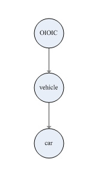
1. A vehicle has weight property;
2. A car inherits the vehicle's weight property;
3. The car has maximal load and maximal velocity properties.
Why don't put the car's two properties into the vehicle? We reserve the question, after studying the next chapter, you will understand why.
Step 1: Create a "Factory" node of MO in "E:\OIC_Workroom\mo" directory.
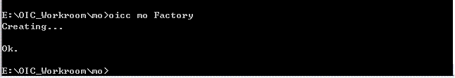
Step 2: Create a "vehicle" node of GO in "Factory" folder.

Step 3: Create a "car" node of GO in "Factory" folder.

Step 4: Also, create an "oioic" folder in "E:\OIC_Workroom\mo\Factory", and copy "oioic.h" & "oioic.c" files into the "oioic" folder.
Step 5: Create a VC project for the "Factory", and insert the oioic,se and so folders into the project. (refer to the "HelloWorld" sample)
Step 6: In the "ho.h" file, define required OID(s) according to the template of OIC definition.
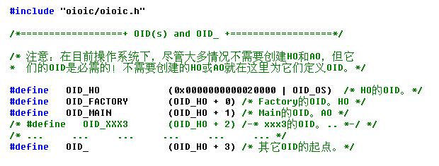
Step 7: According to hierarchy, include the required .h file(s) for the .h file(s) in each directory.
1. In the "ho.h" file: #include "oioic/oioic.h"
2. In the "Factory.h" file: #include "ho.h"
3. In the "so.h" file: #include "../ho.h"
4. In the "ao.h" and "go.h" files: #include "../so.h"
5. In the "Main.h" file: #include "../ao.h"
6. In the "vehicle.h" and "car.h" files: #include "../go.h"
Step 8: Add a "weight" property for the vehicle.
In the "vehicle.h" file, uncomment the structure "TAG_EM_VEHICLE" of the vehicle's EM, and add a "weight" variable of SR32 in it.


NOTE! Don't change the names of the "TAG_EM_VEHICLE" and "EM_VEHICLE", and don't move them into other files. Otherwise, constructed by oicc later, the oicc will think that the vehicle has no EM(Extended Member), because it don't find them in the "vehicle.h" file.
Step 9: Add a maximal load and a maximal velocity properties for the car.
In the "car.h" file, uncomment the structure "TAG_EM_CAR" of the car's EM, and add a "max_load" and a "max_velocity" variables of SR32 in it.


Step 10: Determine the IBN(s) of the car.
Locate the "OICC label" in the "car.c" file.
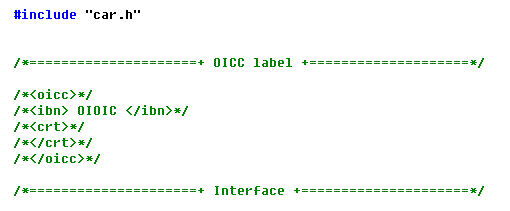
Node's IBN is specified between the "/*<ibn>" and the "</ibn>*/", as the above figure, the car's IBN is OIOIC. If the node is constructed by oicc, oicc will implement the node's CRT function between the "/*<crt>*/" and "/*</crt>*/", if not constructed, it is empty between them.
To replace "OIOIC" by "vehicle", set the car's IBN as "vehicle".
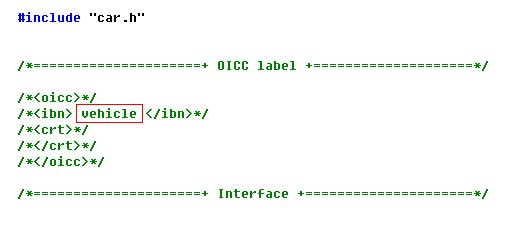
Step 11: Specify constructing the car node.
In the "ho.c" file, find the "__CreateObject__" function.
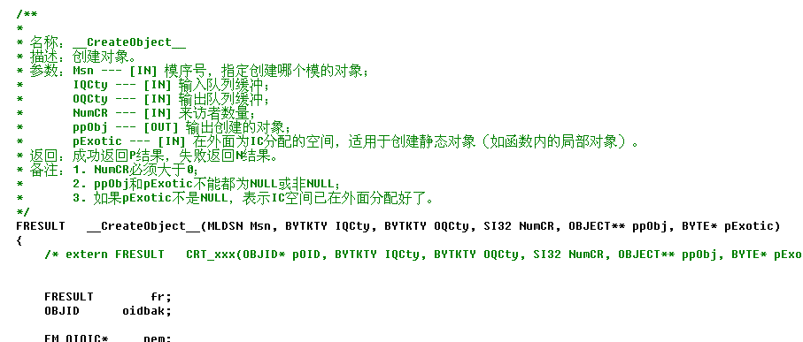
Add the following content in the "__CreateObject__" function.
1. Declare externally the car's CRT function at the beginning of the "__CreateObject__" function.
Copy the content in the comment "/* extern FRESULT CRT_xxx(OBJID* pOID, BYTKTY IQCty, BYTKTY OQCty, SI32 NumCR, OBJECT** ppObj, BYTE* pExotic); */" at the beginning of the "__CreateObject__" function, and paste the content under the comment, then change "xxx" into "car".

2. As follows, in the "__CreateObject__" function, call the car's CRT function in the switch statement.

Step 12: Construct the "Factory" with oicc.
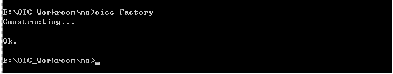
If the "car.c" file is being opened in the project, the following dialog box appears, writing "This file has been modified outside of the source editor. Do you want to reload it?", click "Yes" to reload it.

Again see the "OICC label" in the "car.c" file, the original is empty in the body of the <crt> label and now has the car's CRT function.
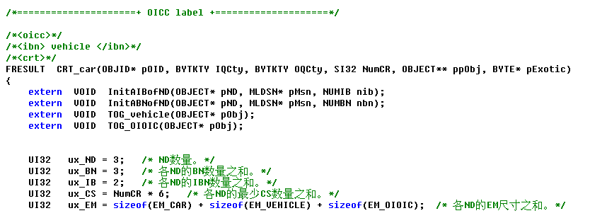
NOTE! Don't write your things in node's CRT function, otherwise, oicc will clean it out at next constructing.
Compile, there are warnings and errors.
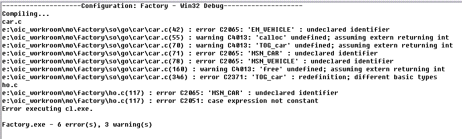
Include required .h file(s) in "car.c" file, and declare the car's TOG function forwardly.

Compile again, four errors, no definition of the MSNs of vehicle and car.
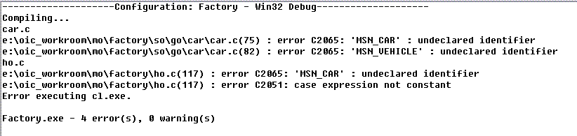
Find the template of MSN in "ho.h" file.
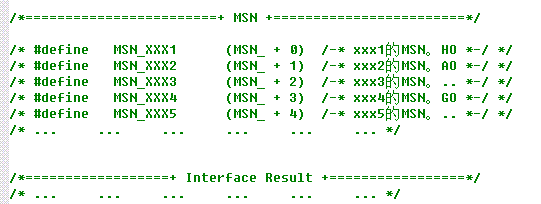
Define the MSNs of vehicle and car according to the template of MSN.
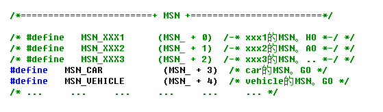
Compile, Ok.
Step 13: Initialize the car's three properties.
Find the "car_Open" interface in the "car.c" file.

Write the following code to initialize the car's three properties value, any value.
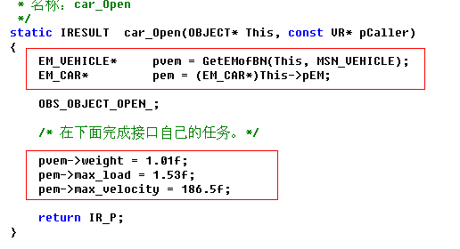
Step 14: Define the AC1 interaction of vehicle and car, and annotate the function of interaction and TSO(the Type of Stream Outputted).
Find the "Action" in the "ho.h" file.

Define non-exclusive interactions GET_MAXLOAD and GET_MAXVELOCITY, and in commentary, annotate that the car uses them. Define GET_WEIGHT interaction for the vehicle. Define the required starting-points of interaction.

Now that the car uses the GET_MAXLOAD and GET_MAXVELOCITY by itself, why don't exclusively define them for the car? We also reserve the question, after studying the next chapter, you will understand why.
Step 15: Implement the interactions of vehicle and car。
Find the "vehicle_Interact1" interface in the "vehicle.c" file.
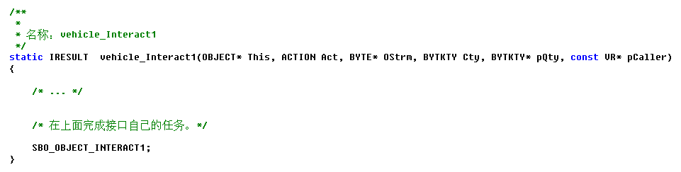
Implement the GET_WEIGHT in the vehicle_Interact1 for the vehicle.
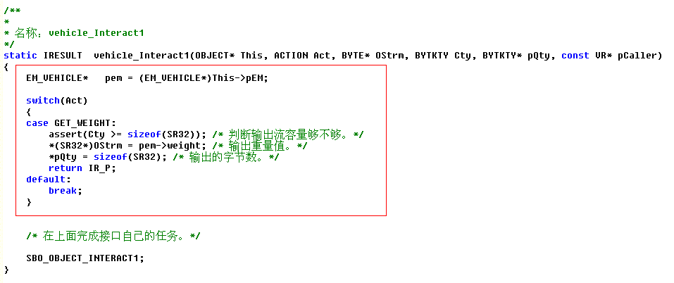
Find the "car_Interact1" interface in the "car.c" file.
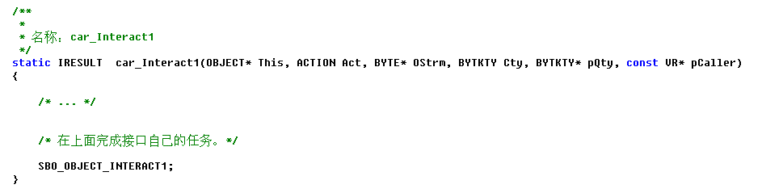
Implement the GET_MAXLOAD and GET_MAXVELOCITY in the car_Interact1 for the car.
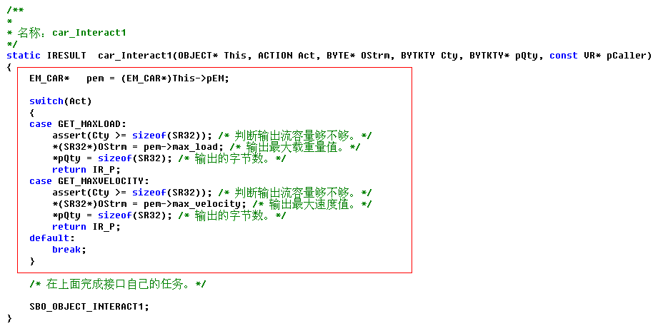
Step 16: Write the code of printing the car's properties.
1. Locate the "Global object pointer(s)" in the "ho.c" file.
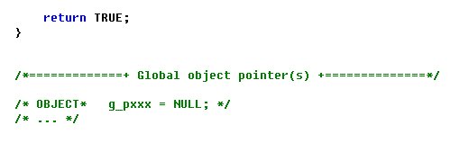
2. Define an object pointer variable "g_pCar" for the car.
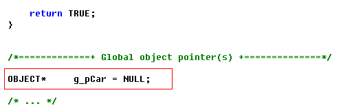
3. Declare the "g_pCar" externally in the "Main.c" file.

In the following 4 ~ 7 steps, write these code in the "Main" function in the "Main.c" file.
4. Define variables and initialize the "caller".
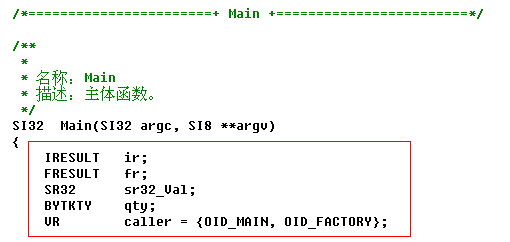
5. Write the code of dynamically creating a car with the "CreateObject" macro and opening the car.
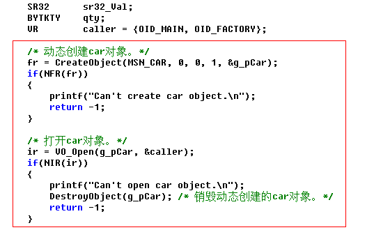
6. Write the code of printing the car's properties value.
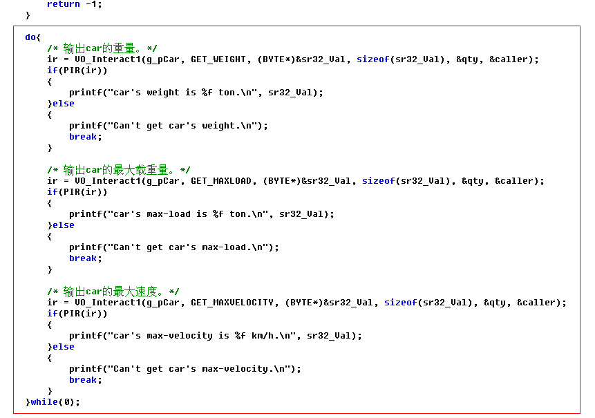
7. Write the code of closing and destroying the car object.
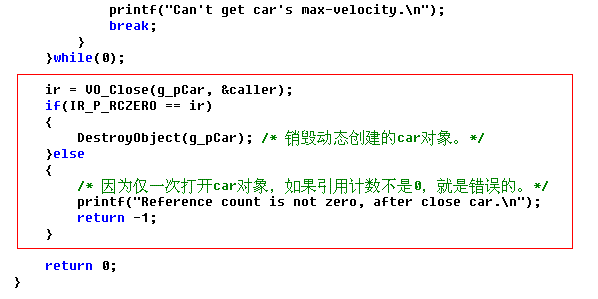
Step 17: In the "Close" interface of the car, examine whether the object's reference count is zero.
In the "car.c" file, find the "car_Close" interface and write the code in it.
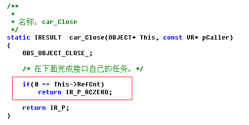
Step 18: Execute the program.
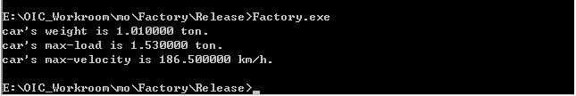
Copyright©2005-2009 赵平智. All Rights Reserved.